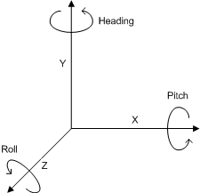

javax.microedition.amms.control.audio3d
Interface OrientationControl
- All Superinterfaces:
- javax.microedition.media.Control
- All Known Subinterfaces:
- DirectivityControl, MacroscopicControl
public interface OrientationControl
- extends javax.microedition.media.Control
OrientationControl is an interface for manipulating
the virtual orientation of an object in the virtual acoustical space.
Usually, the object is either the listener
via the Spectator or a source via a SoundSource3D.
In the case of a sound source, subinterfaces DirectivityControl
and/or MacroscopicControl are used instead of
the superinterface OrientationControl.
Orientation
Orientation is a representation of a direction in
a virtual acoustical space. Orientation can be defined in
two ways by using this interface: in rotation angles around
object's coordinate axes or by using orientation vectors.
The initial orientation is towards the negative Z-axis up-direction
being towards the positive Y-axis. Both of the orientation definitions
(rotation angles and orientation vectors) use this initial orientation
as the reference and all the rotations are relative to this.
Default Values
The default orientation of all orientation controls (whether
the application has obtained them or not) is pointing
directly towards the negative Z-axis:
frontVector = (0, 0, -1000)
upVector = (0, 1000, 0)
In rotation angles this is equivalent to:
heading = 0
pitch = 0
roll = 0
- See Also:
Control,
DirectivityControl,
LocationControl
|
Method Summary |
int[] |
getOrientationVectors()
Gets the orientation of the object using two vectors. |
void |
setOrientation(int[] frontVector,
int[] aboveVector)
Turns the object to the new orientation. |
void |
setOrientation(int heading,
int pitch,
int roll)
Turns the object to the new orientation. |
getOrientationVectors
int[] getOrientationVectors()
Gets the orientation of the object using two vectors.
- Returns:
- a 6-element array that has first the Front vector
and then the Up vector
- See Also:
setOrientation(int[] frontVector, int[] aboveVector)
setOrientation
void setOrientation(int[] frontVector,
int[] aboveVector)
throws java.lang.IllegalArgumentException
Turns the object to the new orientation.
The orientation is specified using two vectors, one specifying the
direction of the Front vector of the object in world coordinates, and
another specifying the Above vector of the object. The "Right" and Up
vectors of the object are calculated by first calculating the "Right"
vector as the cross product of the Front vector and the Above vector,
and then the Up vector as a cross product of the "Right" and Front
vectors. (The magnitudes of the Front and Up vectors may be adjusted by
the implementation.)
The specified vectors need not be unit vectors (i.e. normalized):
they can have any non-zero magnitude.

Orientation defined using Front and Above vectors.
Please notice the right-angle between Front and Up vectors,
but not between Front and Above vectors.
- Parameters:
frontVector - a 3-element array specifying the Front vector of the
object in the world coordinate systemaboveVector - a 3-element array specifying the Above vector mentioned above
- Throws:
java.lang.IllegalArgumentException - if any argument has fewer than or
greater than 3 elements in the array; or if any argument is the zero
vector; or if the specified vectors are parallel. (The orientation of
the object will remain unchanged.)
setOrientation
void setOrientation(int heading,
int pitch,
int roll)
Turns the object to the new orientation.
The new orientation is given using rotation angles.

The rotation angles.
Positive rotation directions around the coordinate axes
are counterclockwise when looking towards the origin
from a positive coordinate position on each axis.
The initial orientation (heading=0, pitch=0 and roll=0)
is towards the negative Z-axis (up-direction being towards
positive Y-axis). Orientation is defined in three angles:
heading that represents rotation around the object's Y-axis,
pitch that represents rotation around the object's X-axis,
and roll that represents rotation around the object's Z-axis.
Orientation is applied in the following order: heading, pitch,
and roll. Therefore, notice that heading rotates the X-axis
and therefore affects the pitch, and similarly heading and
pitch rotate the Z-axis and therefore affect the roll.

Orientation defined using rotation angles.
An implementation note:
the transformation (without scaling) from heading, pitch and roll
to Front and Up vectors is the following:
- xfront=-sin(heading)*cos(pitch)
- yfront=sin(pitch)
- zfront=-cos(heading)*cos(pitch)
- xup=-sin(roll)*cos(heading)+cos(roll)*sin(pitch)*sin(heading)
- yup=cos(pitch)*cos(roll)
- zup=sin(roll)*sin(heading)+cos(roll)*cos(heading)*sin(pitch)
- Parameters:
heading - the rotation around the Y-axis in degreespitch - the rotation around the X-axis in degreesroll - the rotation around the Z-axis in degrees
Copyright © 2004-2010 Nokia. All Rights Reserved.